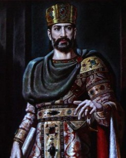
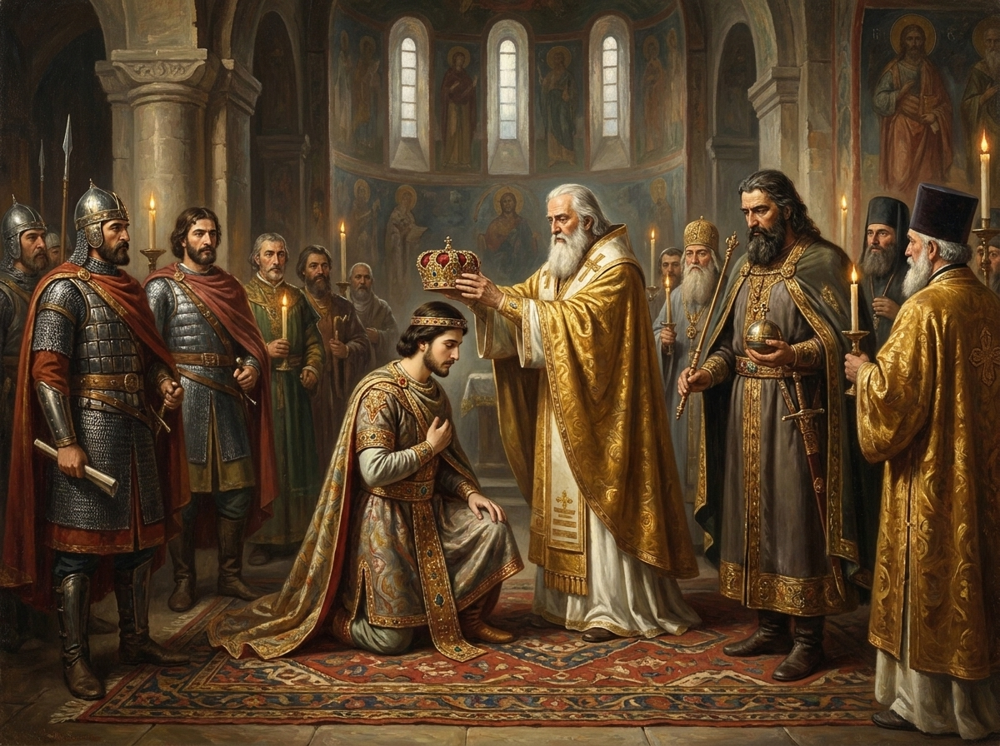

დავით
აღმაშენებელი
მეფე, რომელმაც დაშლილი და დამცირებული ქვეყანა გააერთიანა, სელჩუკები განდევნა და საქართველო რეგიონის ერთ-ერთ უძლიერეს სახელმწიფოდ აქცია.


ტახტზე ასვლა 16 წლის ასაკში
დავით IV, საქართველოს მეფე 1089–1125 წლებში, ტახტზე ავიდა სულ რაღაც თექვსმეტი წლის ასაკში — ქვეყანაში, რომელიც დაქუცმაცებული იყო ფეოდალური ბატონების თვითნებობით და გამუდმებული სელჩუკური შემოსევებით დაქანცული. სამეფო ხაზინა დაცლილი, სამხედრო ძალა — მოშლილი, ხოლო დიდგვაროვნები საკუთარ სამფლობელოებში ფაქტობრივად დამოუკიდებელ მმართველებად გვევლინებოდნენ.
თავისი 36-წლიანი მეფობის განმავლობაში დავითმა თანმიმდევრულად გაატარა სამხედრო, საეკლესიო და სახელმწიფოებრივი რეფორმები, რომლებმაც ქვეყანა ცენტრალიზებულ, ძლიერ სამეფოდ აქციეს. მისი მმართველობის ბოლოს საქართველო არა მხოლოდ გათავისუფლდა უცხო ბატონობისგან, არამედ რეგიონის წამყვან პოლიტიკურ და კულტურულ ძალად იქცა — პერიოდი, რომელსაც ისტორიაში „ოქროს ხანა" ეწოდა.
მეფობის ოთხი მიმართულება
თითოეული გვერდი დეტალურად იხილავს დავითის მემკვიდრეობის ცალკეულ ასპექტს.
რეფორმები
ბრძოლა ფეოდალურ დაქსაქსულობასთან, საეკლესიო და სამხედრო გარდაქმნები, ყივჩაღთა ჩამოსახლება.
განათლება
გელათის აკადემია, ფილოსოფიური სკოლა და დავითის საკუთარი ლიტერატურული მემკვიდრეობა.
ბრძოლები
დიდგორის გადამწყვეტი ბრძოლა 1121 წელს და თბილისის განთავისუფლება.
მშენებლობა
ტაძრები, ციხესიმაგრეები და საგზაო ინფრასტრუქტურა — მეფისთვის მინიჭებული „აღმაშენებლის" ტიტულის საფუძველი.